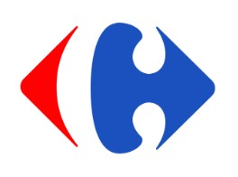

Bienvenue sur ma page, moi c'est Diane 😇
Je suis passionnée par la musique et le piano 🎹. J'aime beaucoup voyager, et décrouvrir de nouvelle culture 🌍.
Rejoins moi sur LinkedinData 💻
Je suis passionnée par la data. Je suis actuellement en alternance chez Carrefour. Je suis Analyste de donnée e-commerce en pricing. J'ai la possibilité de réaliser les missions suivantes :
- Réaliser des requêtes Sql et Python
- Visualisation des données sur Data studio
- Analyser les résultats
Marketing digital 🌐
Je suis passionnée par le marketing digital. Lors de ma précedente expérience en tant que chargée de marketing digital chez EDF. J'ai pu découvrir et pratiquer des missions tournées autour du digital.
Tels que :
- Les campagnes marketing digital (emailing, push sms)
- Les projets digitaux (gérer un site web)
- SEO : Optimiser les pages du site web
La musique et le piano 🎶
Je pratique du piano depuis l'âge de 7ans. J'en ai fait pendant longtemps au conservatoire.